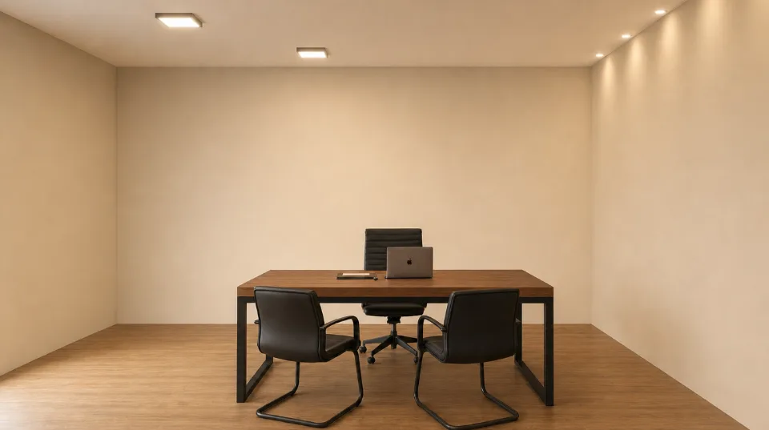
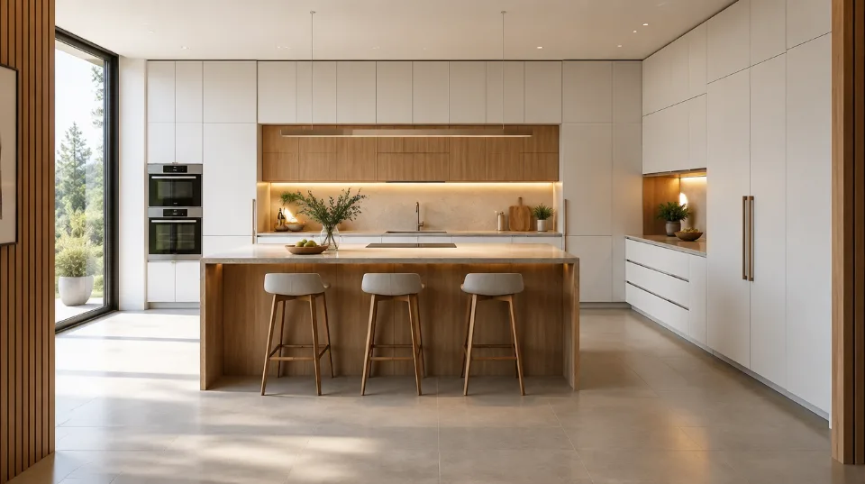
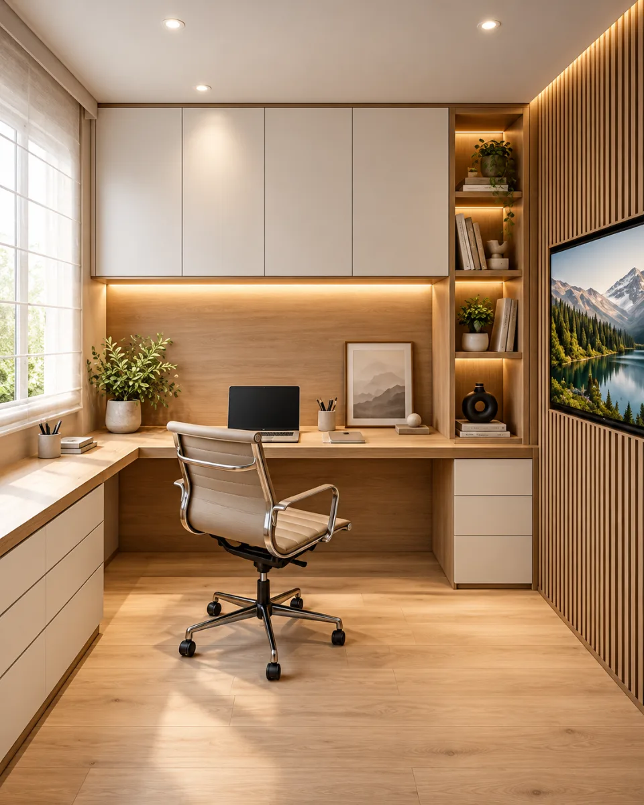
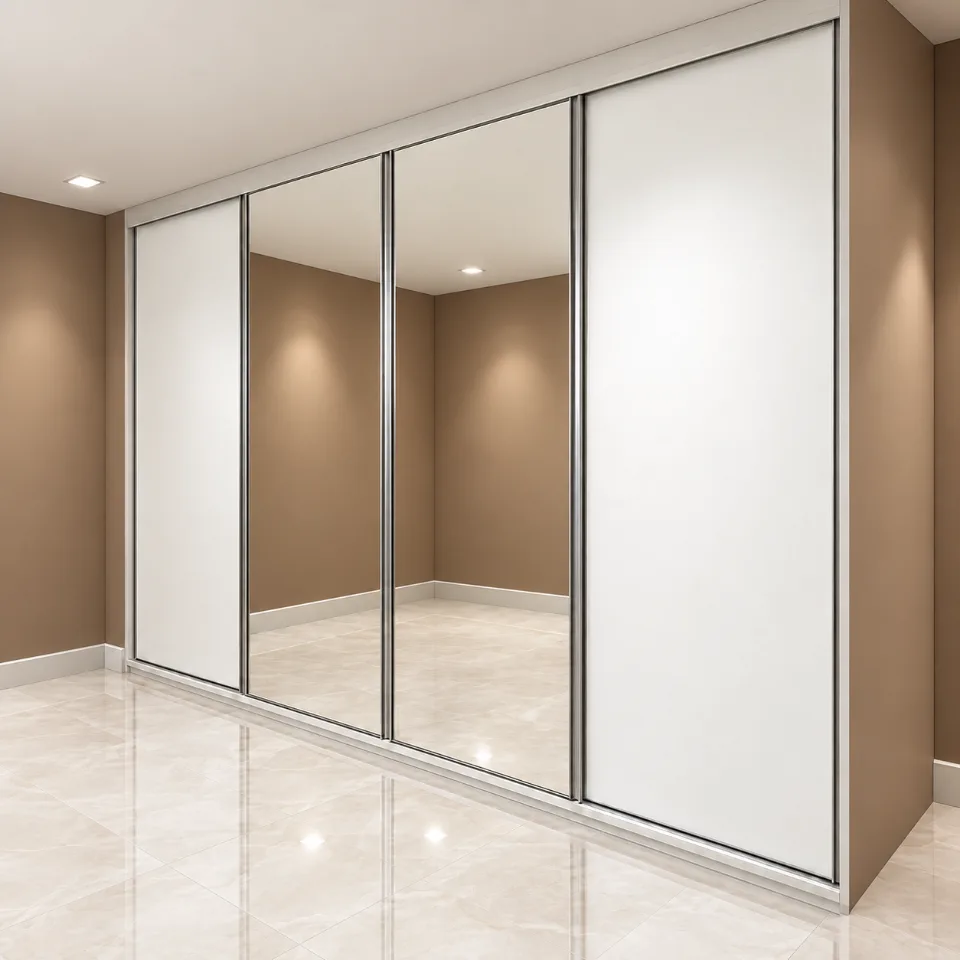
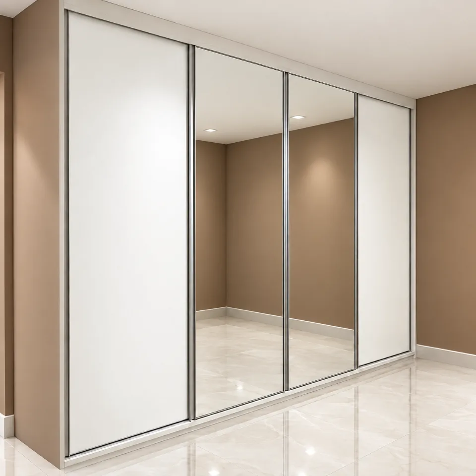
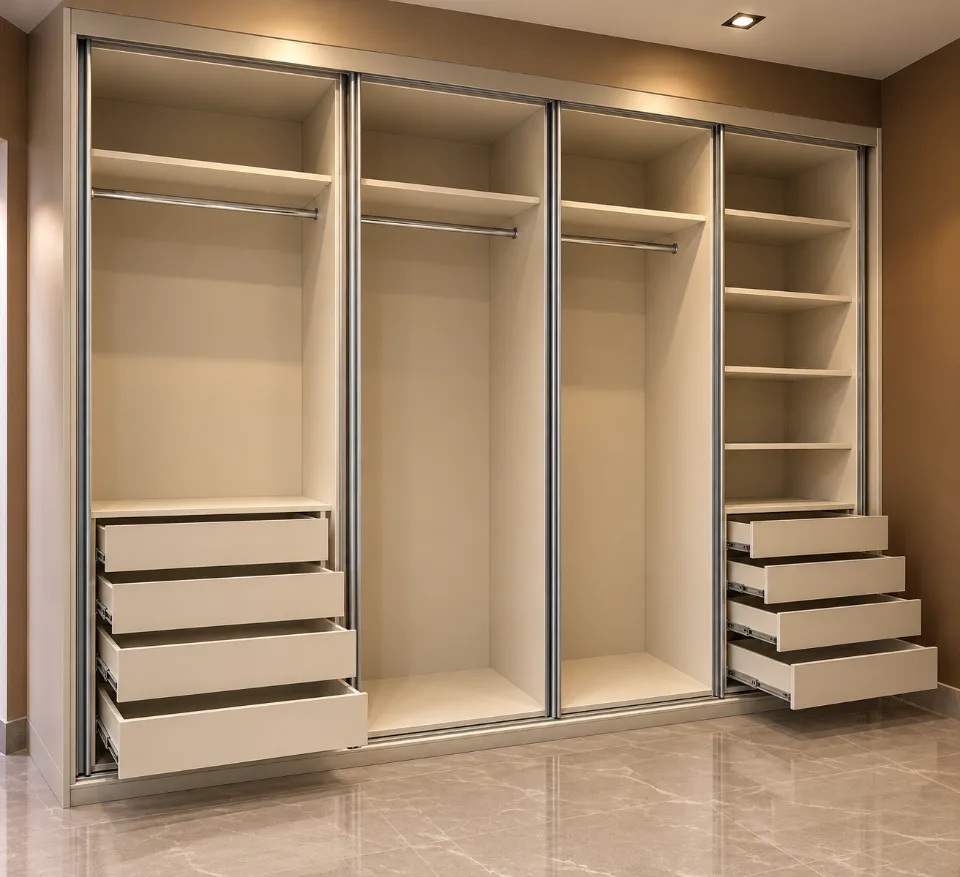
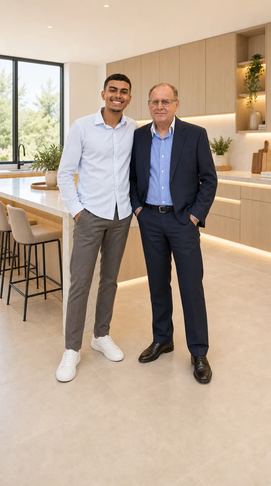
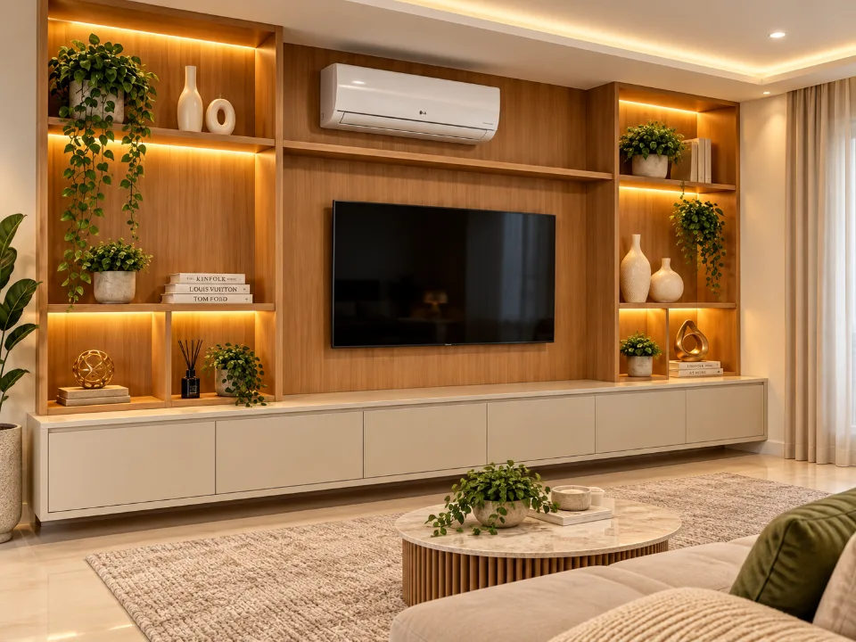

Móveis planejados sob medida
Marcenaria planejada para transformar o seu ambiente.
Acabamentos que valorizam cada detalhe.
Funcionalidade e beleza, sob medida para você.
Projetos sob medida que unem funcionalidade, acabamento e a identidade de cada espaço.
Antes e depois
Veja a transformação do seu ambiente.
Arraste o controle para comparar cada ambiente antes e depois do projeto planejado.
Cozinha


Armários superiores
Portas off-white foscas com puxador preto.
Torneira
Monocomando de bica alta em inox escovado.
Bancada
Pedra clara com cuba de inox embutida.
Painel ripado
Ripas em madeira natural com LED quente sob os armários.
Torre de armários
Madeira natural do piso ao teto, puxador longo preto.
Arraste o divisor para a esquerda — ou use as setas do teclado — para ver a cozinha planejada. Toque nos pontos para ver os materiais (ilustrativos).
Escritório


Armários do piso ao teto
Preto fosco, portas lisas sem puxador aparente.
Estante iluminada
Fundo ripado em madeira e LED quente nas prateleiras.
Nichos revestidos
Pedra escura com spots embutidos.
Painel ripado
Ripas verticais em madeira com nicho iluminado para a TV.
Arraste o divisor para a esquerda — ou use as setas do teclado — para ver o escritório planejado. Toque nos pontos para ver os materiais (ilustrativos).
Serviços
Marcenaria pensada para a sua rotina.
-

Cozinhas planejadas
Ambientes funcionais, elegantes e pensados para a sua rotina.
Pedir orçamento de cozinha -
Quartos e closets planejados
Organização, conforto e aproveitamento inteligente de cada espaço.
Pedir orçamento de quarto ou closet -

Salas e painéis de TV
Design integrado para uma sala mais leve, funcional e acolhedora.
Pedir orçamento de sala ou painel -

Home office
Um espaço de trabalho planejado para produtividade e conforto.
Pedir orçamento de home office

Projetos
Ambientes que mostram as possibilidades do planejado.
Imagens ilustrativas de ambientes planejados.
-
Cozinha planejada
Materiais, iluminação e soluções sob medida para o coração da casa.
-
Home office
Um espaço de trabalho planejado para produtividade e conforto.
-

Quarto e closet
Marcenaria que organiza e valoriza o seu espaço de descanso.
-
Painel de TV
Design integrado para uma sala mais leve, funcional e acolhedora.
Como funciona
Etapas da marcenaria, do primeiro contato à instalação.
-
Entendemos suas necessidades e avaliamos o ambiente para aproveitar cada detalhe.
- Conversa sobre a sua rotina, o seu estilo e o que precisa ser guardado.
- Medição do ambiente para aproveitar cada centímetro.
-
Transformamos as ideias em um projeto alinhado ao seu estilo, orçamento e rotina.
- Divisões internas, materiais e acabamentos definidos com você.
- Ajustes até o projeto ficar do seu jeito antes da produção.
-
Cada peça é produzida com atenção ao acabamento, à funcionalidade e à qualidade.
- Peças cortadas e preparadas conforme o projeto aprovado.
- Atenção ao acabamento e ao funcionamento de portas e gavetas.
-
Finalizamos o projeto no seu ambiente, garantindo cuidado em cada etapa da montagem.
- Montagem no local, com nivelamento e ajuste de portas e gavetas.
- O ambiente pronto para usar — como na foto ao final desta etapa.
Clique ou toque em uma peça para ver o material.




1 de 6 · Frente com portas fechadas
Diferenciais
Cuidado em cada decisão do projeto.
-
Projeto pensado para o seu espaço.
-
Materiais e acabamentos escolhidos com cuidado.
-
Soluções funcionais para o dia a dia.
-
Atendimento direto do planejamento à instalação.

Sobre nós
Sobre a Marcenaria Pinson
Na Marcenaria Pinson, cada projeto nasce para atender o seu espaço, a sua rotina e o seu estilo. Trabalhamos com soluções planejadas que valorizam o ambiente e tornam o dia a dia mais prático.
- Projeto personalizadopensado para o seu espaço, a sua rotina e o seu estilo
- Acabamento cuidadosomateriais e acabamentos escolhidos com cuidado
- Atendimento diretodo planejamento à instalação
Parcerias
Empresas e lojas parceiras.
- Casa Aurora
- Atelier Norte
- luminainteriores
- Madeira Viva
- Vértice Home
- Pedra & Linho
- Estúdio Ipê
Marcas ilustrativas.

Contato
Vamos transformar o seu ambiente?
Conte sua ideia e solicite um orçamento pelo WhatsApp.